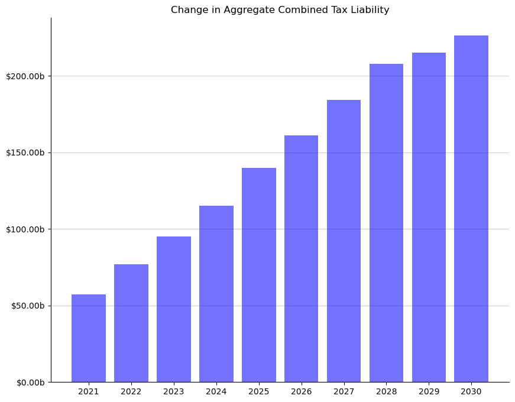
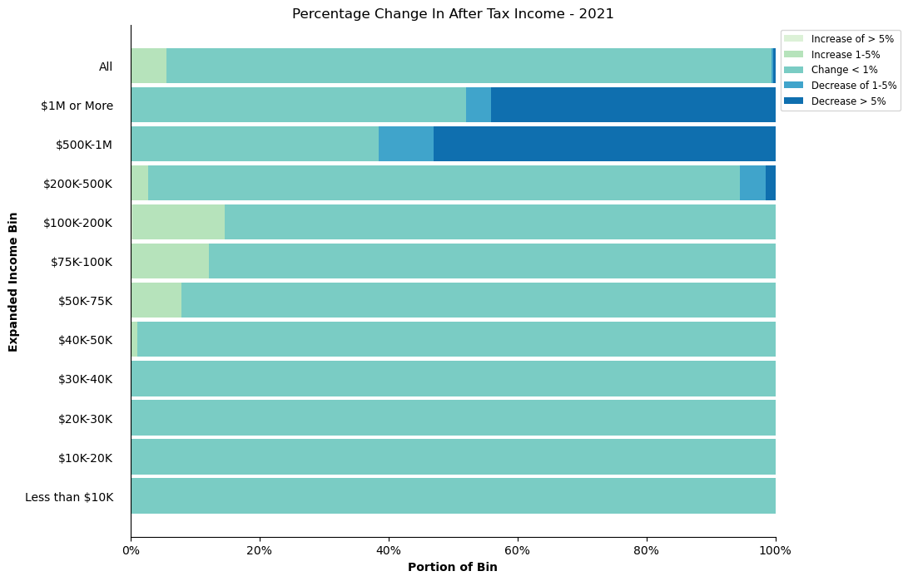

This notebook contains an example for how to use the taxbrain python package
# # Install conda, taxbrain, and taxcalc if in Google Colab.
import sys
if 'google.colab' in sys.modules and 'taxbrain' not in sys.modules:
# Install taxbrain and dependencies
!pip install taxbrain &> /dev/null
!pip install taxcalc &> /dev/null
!pip install pypandoc &> /dev/null
!pip install -U pandas &> /dev/null # make sure pandas is up to date
from taxbrain import TaxBrain, differences_plot, distribution_plot
reform_url = "https://raw.githubusercontent.com/PSLmodels/Tax-Calculator/master/taxcalc/reforms/Larson2019.json"
start_year = 2021
end_year = 2030
Static Reform#
After importing the TaxBrain class from the taxbrain package, we initiate an instance of the class by specifying the start and end year of the anlaysis, which microdata to use, and a policy reform. Additional arguments can be used to specify econoimc assumptions and individual behavioral elasticites.
Once the class has been initiated, the run() method will handle executing each model
tb_static = TaxBrain(start_year, end_year, microdata="CPS", reform=reform_url)
tb_static.run()
Once the calculators have been run, you can produce a number of tables, including a weighted total of a given variable each year under both current law and the user reform.
print("Combined Tax Liability Over the Budget Window")
tb_static.weighted_totals("combined")
Combined Tax Liability Over the Budget Window
| 2021 | 2022 | 2023 | 2024 | 2025 | 2026 | 2027 | 2028 | 2029 | 2030 | |
|---|---|---|---|---|---|---|---|---|---|---|
| Base | 2.288212e+12 | 3.059889e+12 | 3.235148e+12 | 3.437784e+12 | 3.583177e+12 | 3.773408e+12 | 3.935339e+12 | 4.093183e+12 | 4.288115e+12 | 4.504975e+12 |
| Reform | 2.345440e+12 | 3.136974e+12 | 3.330267e+12 | 3.552937e+12 | 3.723043e+12 | 3.934557e+12 | 4.119399e+12 | 4.301007e+12 | 4.503058e+12 | 4.731386e+12 |
| Difference | 5.722739e+10 | 7.708472e+10 | 9.511880e+10 | 1.151522e+11 | 1.398666e+11 | 1.611492e+11 | 1.840604e+11 | 2.078243e+11 | 2.149425e+11 | 2.264111e+11 |
If you are interested in a detailed look on the reform’s effect, you can produce a differences table for a given year.
print("Differences Table")
tb_static.differences_table(start_year, "weighted_deciles", "combined")
Differences Table
| count | tax_cut | perc_cut | tax_inc | perc_inc | mean | tot_change | share_of_change | ubi | benefit_cost_total | benefit_value_total | pc_aftertaxinc | |
|---|---|---|---|---|---|---|---|---|---|---|---|---|
| 0-10n | 0.102049 | 0.000000 | 0.000000 | 0.035165 | 34.458500 | 8.236588 | 0.000841 | 0.001469 | 0.0 | 0.0 | 0.0 | 0.006412 |
| 0-10z | 8.391348 | 0.000000 | 0.000000 | 0.000000 | 0.000000 | 0.000000 | 0.000000 | 0.000000 | 0.0 | 0.0 | 0.0 | 0.000000 |
| 0-10p | 12.213921 | 0.000000 | 0.000000 | 5.510582 | 45.117228 | 3.707203 | 0.045279 | 0.079122 | 0.0 | 0.0 | 0.0 | -0.030305 |
| 10-20 | 20.706676 | 0.000000 | 0.000000 | 15.019126 | 72.532770 | 17.226980 | 0.356713 | 0.623326 | 0.0 | 0.0 | 0.0 | -0.049684 |
| 20-30 | 20.708035 | 0.017725 | 0.085596 | 13.199854 | 63.742668 | 26.966834 | 0.558430 | 0.975809 | 0.0 | 0.0 | 0.0 | -0.047380 |
| 30-40 | 20.707242 | 0.260630 | 1.258640 | 11.858963 | 57.269639 | 29.406191 | 0.608921 | 1.064038 | 0.0 | 0.0 | 0.0 | -0.036929 |
| 40-50 | 20.706111 | 1.050553 | 5.073636 | 12.921486 | 62.404214 | 27.623797 | 0.571981 | 0.999489 | 0.0 | 0.0 | 0.0 | -0.013555 |
| 50-60 | 20.709566 | 2.990642 | 14.440875 | 12.844296 | 62.021077 | -38.064106 | -0.788291 | -1.377472 | 0.0 | 0.0 | 0.0 | 0.113286 |
| 60-70 | 20.707672 | 3.782751 | 18.267387 | 12.709595 | 61.376265 | -155.359402 | -3.217131 | -5.621664 | 0.0 | 0.0 | 0.0 | 0.261655 |
| 70-80 | 20.707340 | 4.037743 | 19.499093 | 13.370323 | 64.568038 | -199.944135 | -4.140311 | -7.234842 | 0.0 | 0.0 | 0.0 | 0.272457 |
| 80-90 | 20.707567 | 4.393761 | 21.218142 | 14.284286 | 68.980998 | -426.775011 | -8.837472 | -15.442731 | 0.0 | 0.0 | 0.0 | 0.415269 |
| 90-100 | 20.707849 | 1.410542 | 6.811631 | 17.365216 | 83.858137 | 3480.247151 | 72.068431 | 125.933455 | 0.0 | 0.0 | 0.0 | -1.289472 |
| ALL | 207.075375 | 17.944347 | 8.665611 | 129.118893 | 62.353572 | 276.360195 | 57.227391 | 100.000000 | 0.0 | 0.0 | 0.0 | -0.321254 |
| 90-95 | 10.351302 | 1.275021 | 12.317495 | 8.254645 | 79.744991 | -294.885259 | -3.052446 | -5.333891 | 0.0 | 0.0 | 0.0 | 0.254021 |
| 95-99 | 8.285442 | 0.135521 | 1.635654 | 7.285839 | 87.935429 | 325.629408 | 2.697984 | 4.714497 | 0.0 | 0.0 | 0.0 | -0.073161 |
| Top 1% | 2.071104 | 0.000000 | 0.000000 | 1.824732 | 88.104300 | 34968.247292 | 72.422894 | 126.552849 | 0.0 | 0.0 | 0.0 | -4.300264 |
TaxBrain comes with two (and counting) built in plots as well
differences_plot(tb_static, 'combined', figsize=(10, 8));

distribution_plot(tb_static, 2021, figsize=(10, 8));

You can run a partial-equlibrium dynamic simulation by initiating the TaxBrian instance exactly as you would for the static reform, but with your behavioral assumptions specified
tb_dynamic = TaxBrain(start_year, end_year, microdata="CPS", reform=reform_url,
behavior={"sub": 0.25})
tb_dynamic.run()
---------------------------------------------------------------------------
KeyboardInterrupt Traceback (most recent call last)
Cell In[9], line 3
1 tb_dynamic = TaxBrain(start_year, end_year, microdata="CPS", reform=reform_url,
2 behavior={"sub": 0.25})
----> 3 tb_dynamic.run()
File ~/work/Tax-Brain/Tax-Brain/taxbrain/taxbrain.py:178, in TaxBrain.run(self, varlist, client, num_workers)
176 if self.verbose:
177 print("Running dynamic simulations")
--> 178 self._dynamic_run(
179 varlist, base_calc, reform_calc, client, num_workers
180 )
181 else:
182 if self.verbose:
File ~/work/Tax-Brain/Tax-Brain/taxbrain/taxbrain.py:484, in TaxBrain._dynamic_run(self, varlist, base_calc, reform_calc, client, num_workers)
479 lazy_values = []
480 for yr in range(self.start_year, self.end_year + 1):
481 lazy_values.extend(
482 [
483 delayed(
--> 484 self._behresp_advance(
485 base_calc, reform_calc, varlist, yr
486 )
487 )
488 ]
489 )
490 if client:
491 futures = client.compute(lazy_values, num_workers=num_workers)
File ~/work/Tax-Brain/Tax-Brain/taxbrain/taxbrain.py:424, in TaxBrain._behresp_advance(self, base_calc, reform_calc, varlist, year)
416 if self.corp_revenue is not None:
417 reform_calc = dist_corp(
418 reform_calc,
419 self.corp_revenue,
(...) 422 self.ci_params,
423 )
--> 424 base, reform = behresp.response(
425 base_calc, reform_calc, self.params["behavior"], dump=True
426 )
427 base_df = base[varlist]
428 reform_df = reform[varlist]
File /usr/share/miniconda/envs/taxbrain-dev/lib/python3.13/site-packages/behresp/behavior.py:179, in response(calc_1, calc_2, elasticities, dump)
176 zero_sub_and_inc = False
177 # calculate marginal combined tax rates on taxpayer wages+salary
178 # (e00200p is taxpayer's wages+salary)
--> 179 wage_mtr1, wage_mtr2 = _mtr12(calc1, calc2,
180 mtr_of='e00200p',
181 tax_type='combined')
182 # calculate magnitude of substitution effect
183 if be_sub == 0.0:
File /usr/share/miniconda/envs/taxbrain-dev/lib/python3.13/site-packages/behresp/behavior.py:153, in response.<locals>._mtr12(calc__1, calc__2, mtr_of, tax_type)
148 """
149 Computes marginal tax rates for Calculator objects calc__1 and calc__2
150 for specified mtr_of income type and specified tax_type.
151 """
152 assert tax_type in ('combined', 'iitax')
--> 153 _, iitax1, combined1 = calc__1.mtr(mtr_of, wrt_full_compensation=True)
154 _, iitax2, combined2 = calc__2.mtr(mtr_of, wrt_full_compensation=True)
155 if tax_type == 'combined':
File /usr/share/miniconda/envs/taxbrain-dev/lib/python3.13/site-packages/taxcalc/calculator.py:636, in Calculator.mtr(self, variable_str, negative_finite_diff, zero_out_calculated_vars, calc_all_already_called, wrt_full_compensation)
634 finite_diff *= -1.0
635 # remember records object in order to restore it after mtr computations
--> 636 self.store_records()
637 # extract variable array(s) from embedded records object
638 variable = self.array(variable_str)
File /usr/share/miniconda/envs/taxbrain-dev/lib/python3.13/site-packages/taxcalc/calculator.py:254, in Calculator.store_records(self)
248 """
249 Make internal copy of embedded Records object that can then be
250 restored after interim calculations that make temporary changes
251 to the embedded Records object.
252 """
253 assert self.__stored_records is None
--> 254 self.__stored_records = copy.deepcopy(self.__records)
File /usr/share/miniconda/envs/taxbrain-dev/lib/python3.13/copy.py:163, in deepcopy(x, memo, _nil)
161 y = x
162 else:
--> 163 y = _reconstruct(x, memo, *rv)
165 # If is its own copy, don't memoize.
166 if y is not x:
File /usr/share/miniconda/envs/taxbrain-dev/lib/python3.13/copy.py:260, in _reconstruct(x, memo, func, args, state, listiter, dictiter, deepcopy)
258 if state is not None:
259 if deep:
--> 260 state = deepcopy(state, memo)
261 if hasattr(y, '__setstate__'):
262 y.__setstate__(state)
File /usr/share/miniconda/envs/taxbrain-dev/lib/python3.13/copy.py:137, in deepcopy(x, memo, _nil)
135 copier = _deepcopy_dispatch.get(cls)
136 if copier is not None:
--> 137 y = copier(x, memo)
138 else:
139 if issubclass(cls, type):
File /usr/share/miniconda/envs/taxbrain-dev/lib/python3.13/copy.py:222, in _deepcopy_dict(x, memo, deepcopy)
220 memo[id(x)] = y
221 for key, value in x.items():
--> 222 y[deepcopy(key, memo)] = deepcopy(value, memo)
223 return y
File /usr/share/miniconda/envs/taxbrain-dev/lib/python3.13/copy.py:144, in deepcopy(x, memo, _nil)
142 copier = getattr(x, "__deepcopy__", None)
143 if copier is not None:
--> 144 y = copier(memo)
145 else:
146 reductor = dispatch_table.get(cls)
KeyboardInterrupt:
Once that finishes running, we can produce the same weighted total table as we did with the static run.
print("Partial Equilibrium - Combined Tax Liability")
tb_dynamic.weighted_totals("combined")
Partial Equilibrium - Combined Tax Liability
| 2021 | 2022 | 2023 | 2024 | 2025 | 2026 | 2027 | 2028 | 2029 | 2030 | |
|---|---|---|---|---|---|---|---|---|---|---|
| Base | 2.288212e+12 | 3.059889e+12 | 3.235148e+12 | 3.437784e+12 | 3.583177e+12 | 3.773408e+12 | 3.935339e+12 | 4.093183e+12 | 4.288115e+12 | 4.504975e+12 |
| Reform | 2.325453e+12 | 3.110598e+12 | 3.300424e+12 | 3.519527e+12 | 3.685534e+12 | 3.893183e+12 | 4.078195e+12 | 4.252419e+12 | 4.456083e+12 | 4.678727e+12 |
| Difference | 3.724111e+10 | 5.070951e+10 | 6.527599e+10 | 8.174276e+10 | 1.023573e+11 | 1.197758e+11 | 1.428562e+11 | 1.592361e+11 | 1.679683e+11 | 1.737520e+11 |
Or we can produce a distribution table to see details on the effects of the reform.
print("Distribution Table")
tb_dynamic.distribution_table(start_year, "weighted_deciles", "expanded_income", "reform")
Distribution Table
| count | c00100 | count_StandardDed | standard | count_ItemDed | c04470 | c04600 | c04800 | taxbc | c62100 | ... | othertaxes | refund | iitax | payrolltax | combined | ubi | benefit_cost_total | benefit_value_total | expanded_income | aftertax_income | |
|---|---|---|---|---|---|---|---|---|---|---|---|---|---|---|---|---|---|---|---|---|---|
| 0-10n | 0.102049 | -7.551475 | 0.018507 | -5.739144 | 0.000000 | 0.000000 | 0.0 | 0.000000 | 0.000000 | -7.668671 | ... | 0.000000 | 0.354646 | -0.354646 | 0.065142 | -0.289504 | 0.0 | 0.799655 | 0.799655 | -6.844299 | -6.554795 |
| 0-10z | 8.391348 | -0.092268 | 8.391348 | 112.514600 | 0.000000 | 0.000000 | 0.0 | 0.000000 | 0.000000 | -0.092268 | ... | 0.000000 | 17.779859 | -17.779859 | 0.000000 | -17.779859 | 0.0 | 0.000000 | 0.000000 | 0.000000 | 17.779859 |
| 0-10p | 12.213828 | 28.363546 | 12.209145 | 167.074740 | 0.004683 | 0.027016 | 0.0 | 0.100207 | 0.003218 | 28.336481 | ... | 0.033097 | 28.418745 | -28.382430 | 3.474003 | -24.908426 | 0.0 | 19.599450 | 19.599450 | 50.481331 | 75.389758 |
| 10-20 | 20.707315 | 207.266449 | 20.219094 | 279.867767 | 0.483364 | 7.819285 | 0.0 | 26.200225 | 2.421113 | 200.099117 | ... | 0.331173 | 68.781584 | -66.029655 | 27.329143 | -38.700513 | 0.0 | 107.784243 | 107.784243 | 323.910547 | 362.611060 |
| 20-30 | 20.707625 | 316.289597 | 19.649759 | 286.983701 | 1.052469 | 18.726860 | 0.0 | 116.366956 | 11.594040 | 299.114044 | ... | 1.432791 | 67.460373 | -54.426360 | 42.119995 | -12.306365 | 0.0 | 259.426376 | 259.426376 | 591.717032 | 604.023396 |
| 30-40 | 20.707435 | 393.351699 | 19.512297 | 297.558986 | 1.186973 | 22.195982 | 0.0 | 185.206436 | 19.348877 | 371.709095 | ... | 4.166711 | 67.369167 | -43.840477 | 49.574998 | 5.734521 | 0.0 | 369.191424 | 369.191424 | 788.545275 | 782.810753 |
| 40-50 | 20.707961 | 552.209879 | 18.994523 | 306.898949 | 1.711113 | 34.104147 | 0.0 | 288.666156 | 30.671201 | 520.642787 | ... | 4.748446 | 78.301379 | -42.872126 | 68.367430 | 25.495304 | 0.0 | 404.257894 | 404.257894 | 996.075146 | 970.579843 |
| 50-60 | 20.707095 | 737.129680 | 18.309919 | 326.130739 | 2.394784 | 49.895909 | 0.0 | 426.792560 | 47.171340 | 692.907192 | ... | 5.637376 | 93.235926 | -40.420905 | 90.294542 | 49.873637 | 0.0 | 467.635499 | 467.635499 | 1260.177637 | 1210.304000 |
| 60-70 | 20.707381 | 961.742223 | 17.764738 | 357.306361 | 2.940364 | 63.599918 | 0.0 | 607.828736 | 72.546325 | 907.691224 | ... | 6.013450 | 112.612372 | -34.043261 | 116.488514 | 82.445253 | 0.0 | 579.152777 | 579.152777 | 1606.065255 | 1523.620002 |
| 70-80 | 20.708144 | 1372.350292 | 16.677503 | 372.939658 | 4.025062 | 99.449881 | 0.0 | 947.362325 | 119.797534 | 1293.484222 | ... | 5.554451 | 121.655746 | 3.718197 | 167.669051 | 171.387249 | 0.0 | 633.395089 | 633.395089 | 2091.024672 | 1919.637424 |
| 80-90 | 20.707006 | 2103.906673 | 14.470064 | 347.670867 | 6.234550 | 182.465615 | 0.0 | 1588.577405 | 220.290877 | 1960.285059 | ... | 9.707599 | 124.991789 | 105.021534 | 248.059508 | 353.081042 | 0.0 | 639.509689 | 639.509689 | 2880.096841 | 2527.015798 |
| 90-100 | 20.708187 | 6292.547105 | 9.379556 | 232.889415 | 11.328631 | 394.269174 | 0.0 | 5648.705809 | 1207.909607 | 5982.339577 | ... | 46.456075 | 47.149697 | 1208.574348 | 522.846625 | 1731.420972 | 0.0 | 512.221094 | 512.221094 | 7028.992513 | 5297.571541 |
| ALL | 207.075375 | 12957.513399 | 175.596455 | 3082.096640 | 31.361992 | 872.553786 | 0.0 | 9835.806814 | 1731.754134 | 12248.847858 | ... | 84.081169 | 828.111282 | 989.164360 | 1336.288951 | 2325.453311 | 0.0 | 3992.973190 | 3992.973190 | 17610.241951 | 15284.788640 |
| 90-95 | 10.353161 | 1674.594395 | 5.627299 | 139.772487 | 4.725862 | 149.995546 | 0.0 | 1381.007281 | 221.544160 | 1559.830372 | ... | 6.023246 | 33.605474 | 193.962254 | 183.586874 | 377.549128 | 0.0 | 284.698888 | 284.698888 | 2045.312779 | 1667.763651 |
| 95-99 | 8.283613 | 2352.125355 | 3.275722 | 81.678533 | 5.007891 | 171.274729 | 0.0 | 2086.343615 | 399.406887 | 2214.364099 | ... | 13.727862 | 13.504787 | 399.629963 | 200.112594 | 599.742557 | 0.0 | 191.342406 | 191.342406 | 2635.685291 | 2035.942735 |
| Top 1% | 2.071413 | 2265.827356 | 0.476535 | 11.438396 | 1.594878 | 72.998899 | 0.0 | 2181.354913 | 586.958561 | 2208.145107 | ... | 26.704967 | 0.039436 | 614.982131 | 139.147157 | 754.129288 | 0.0 | 36.179800 | 36.179800 | 2347.994443 | 1593.865155 |
16 rows × 24 columns
Dynamic Reform with Corporate Income Tax Incidence#
Now we simulate a dynamic revenue estimate while accounting for the incidence of a corporate income tax change.
# Corporate revenue estimate
corp_rev = [5_000_000_000] * (end_year - start_year + 1)
incidence_assumptions = {
"Incidence": { # long-run incidence of corporate tax
"Labor share": 0.5,
"Shareholder share": 0.4,
"All capital share": 0.1,
},
"Long run years": 10, # number of years to reach long-run incidence
}
tb_dynamic = TaxBrain(start_year, end_year, microdata="CPS", reform=reform_url,
behavior={"sub": 0.25},
corp_revenue=corp_rev,
corp_incidence_assumptions=incidence_assumptions)
tb_dynamic.run()
print("Partial Equilibrium - Combined Tax Liability")
tb_dynamic.weighted_totals("combined")
Partial Equilibrium - Combined Tax Liability
| 2021 | 2022 | 2023 | 2024 | 2025 | 2026 | 2027 | 2028 | 2029 | 2030 | |
|---|---|---|---|---|---|---|---|---|---|---|
| Base | 2.288212e+12 | 3.059889e+12 | 3.235148e+12 | 3.437784e+12 | 3.583177e+12 | 3.773408e+12 | 3.935339e+12 | 4.093183e+12 | 4.288115e+12 | 4.504975e+12 |
| Reform | 2.327445e+12 | 3.112131e+12 | 3.302017e+12 | 3.521124e+12 | 3.687134e+12 | 3.894808e+12 | 4.078463e+12 | 4.254183e+12 | 4.455432e+12 | 4.680146e+12 |
| Difference | 3.923231e+10 | 5.224220e+10 | 6.686913e+10 | 8.333985e+10 | 1.039572e+11 | 1.214001e+11 | 1.431243e+11 | 1.609999e+11 | 1.673168e+11 | 1.751709e+11 |